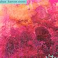

Celtic Lyrics Corner > Artists & Groups > Altan > Harvest Storm > 'Sí Do Mhaimeo Í
|  | 'Sí Do Mhaimeo Í |
| Credits : | Traditional; arranged by Altan |
| Appears On : | Harvest Storm ; The Best Of Altan ; Celtic Voices (compilation) |
| Language : | Gaeilge (Irish Gaelic) |
| Other Versions : |
"
Sí Do Mhaimeo Í
" on Anúna's album Anúna
" Sí Do Mhaimeo Í " on the Celtic Woman soundtrack " Cailleach An Airgid " on Cliar's album Gun Tàmh " Sí Do Mhaimeó Í " on Méav Ní Mhaolchatha's album Méav |
| Lyrics : | English Translation : |
| Curfá : | Chorus : |
| 'Sí do mhaimeo í, 'sí do mhaimeo í | She is your granny, she is your granny |
| 'Sí do mhaimeo í, cailleach an airgid | She's your granny, the hag with the money |
| 'Sí do mhaimeo í, ó Bhaile Inis Mhóir í | She is your granny, from the town of Nishmore |
| 'S chuirfeadh sí cóistí ar bhóithre Cois Fharraige | And she would put coaches on the roads of Cois Farraige |
| Dá bhfeicfeá' an "steam" 'ghabhail siar Tóin Uí Loin' | If you'd see the steam going past Toin Ui Loin' |
| 'S na rothaí 'ghabhail timpeall siar ó na ceathrúnaí | And the wheels turning speedily out from her flanks |
| Chaithfeadh sí 'n stiúir naoi n-vair' ar a cúl | She'd scatter the stoor nine times to the rear |
| 'S ní choinneodh sí siúl le cailleach an airgid | But she'd never keep pace with the hag with the money |
| (Curfá) | (Chorus) |
| 'Measann tú, 'bpósfa', 'measann tú 'bpósfa' | Do you reckon he'd marry, do you reckon he'd marry |
| 'Measann tú, 'bpósfa', cailleach an airgid? | Do you reckon he'd marry the hag with the money? |
| Tá's a'm nach 'bpósfa', tá's a'm nach 'bpósfa' | I know he'll not marry, I know he'll not marry |
| Mar tá sé ró-óg 'gus d'ólfadh sé'n t-airgead | 'Cause he is too young and he'll squander the money |
| (Curfá 2x) | (Chorus 2x) |
| 'S gairid go 'bpósfaidh, 's gairid go 'bpósfaidh | We'll soon have a wedding, we'll soon have a wedding |
| 'S gairid go 'bpósfaidh, beirt ar an mbaile seo | We'll soon have a wedding, by two in the village |
| 'S gairid go 'bpósfaidh, 's gairid go 'bpósfaidh | We'll soon have a wedding, we'll soon have a wedding |
| Séan Shéamais Mhóir agus Máire Ní Chathasaigh | Between Sean Seamais Mhoir and Maire Ni Chathasaigh |
| (Curfá 3x) | (Chorus 3x) |